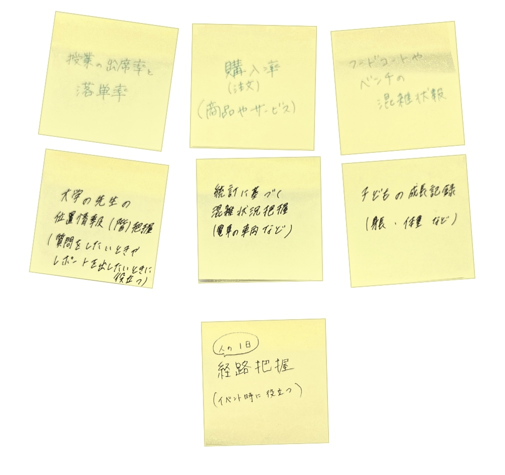

1.IoT(データ保存)で何ができそうか？どのような価値あるものになるか？

・大学の先生が学校内のどの階にいるのかをデータ保存できると、提出物を出したい時や質問しに行きたい時に
データを見ればどの階にいることが多いのかをもとに探せば早く見つけることができる。
・テーマパークやショッピングモールのフードコートやベンチの混雑情報がデータ保存できると、
そのデータを見た人が穴場の空いている場所に分散し、混雑が改善されるのではないか。
・人の１日の経路がデータ保存できると、テーマパークやイベントの時に空いている経路やよく混雑する経路などがわかり、
経路誘導などの際に役立つのではないか。